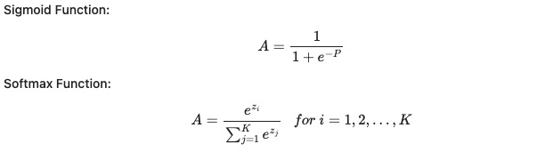
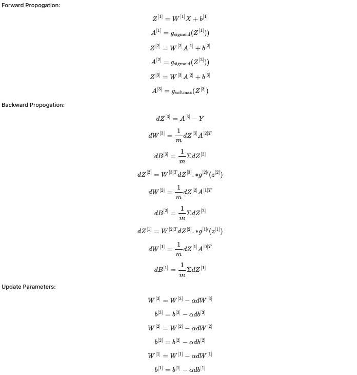
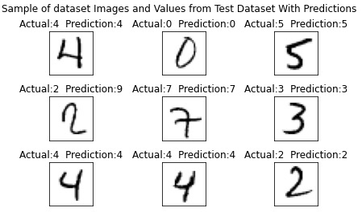

Neural Network From Scratch
This short project aims to train a neural network using the MNIST dataset, using only linear algebra via Numpy. The MNIST dataset consists of 28x28 handwritten digits with corresponding integer values for the represented digit. The model, as currently constructed, can correctly identify about 90% of hand-drawn digits. Accurately over 98% can be achieved using actual data science modules.
This project uses the sigmoid function as the activator and the softmax function to generate probabilities and, thus, predictions. While some functions perform better in training than the sigmoid function, it was selected here for its ability to limit values and prevent them from exceeding the limits of float64.
This neural network utilizes two hidden layers with 72 and 36 nodes, respectively. This combination gives a good amount of accuracy without requiring too much time to run.
The training loop iterates 500 times to train the model appropriately. The model is accurate 92.9% of the time on the 60,000 training samples.
Here you can see examples of the numbers the model correctly identifies, and one example of a two, which it guesses is a nine. Using only NumPy, linear algebra, and multivariable calculus, this neural network can estimate digits from hand-drawn images 91.1% of the time on a 10,000-sample test set. With more tinkering or training data, this neural network could be more accurate, but, considering its limited resources, 91.1% is a respectable success rate.
Check out the code here:
GitHub